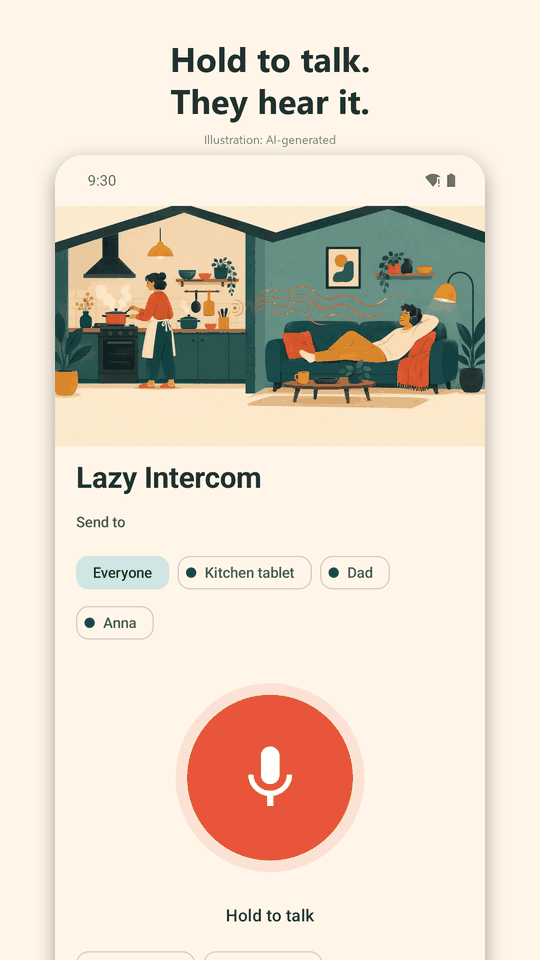
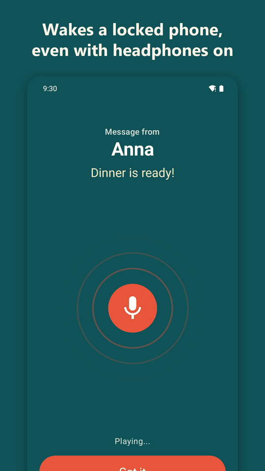
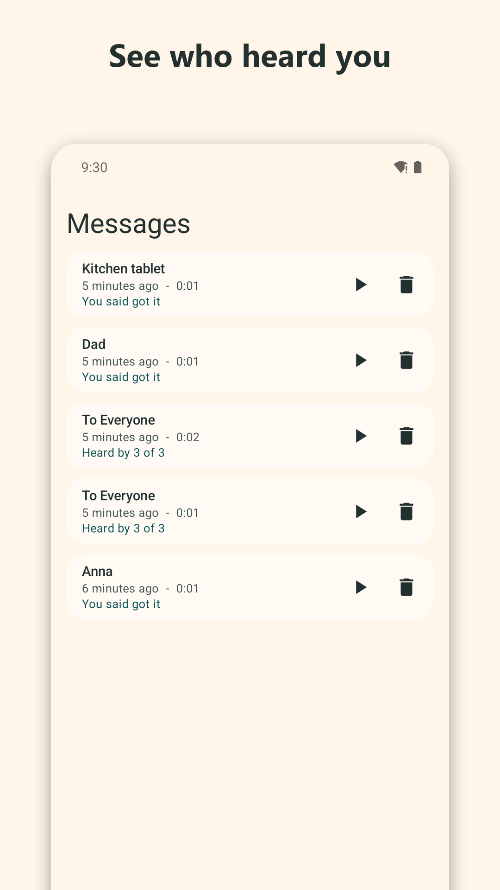
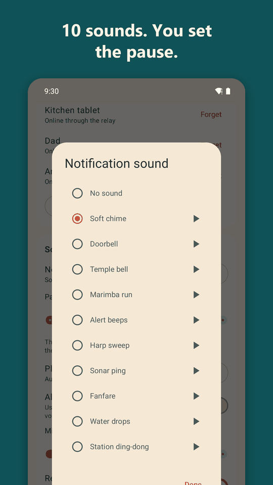
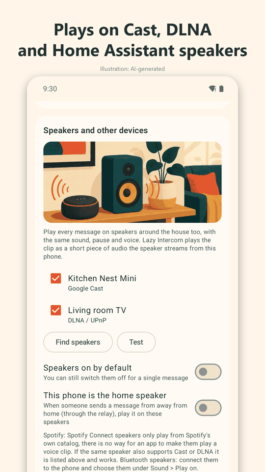
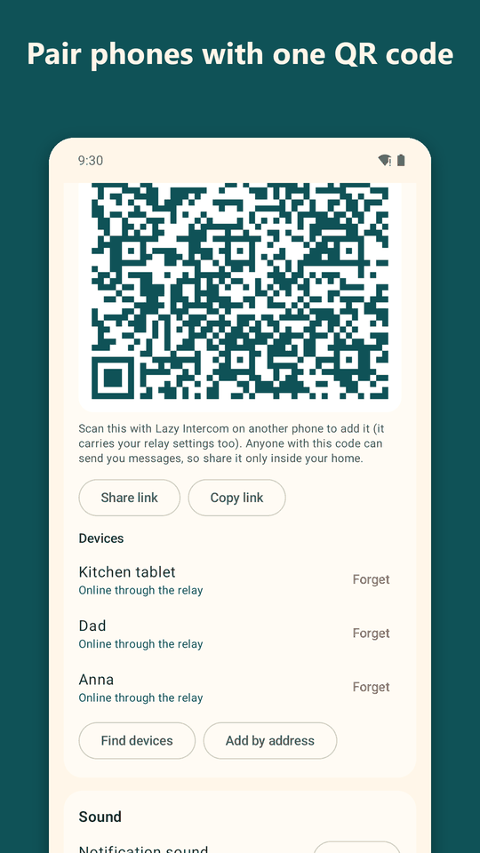
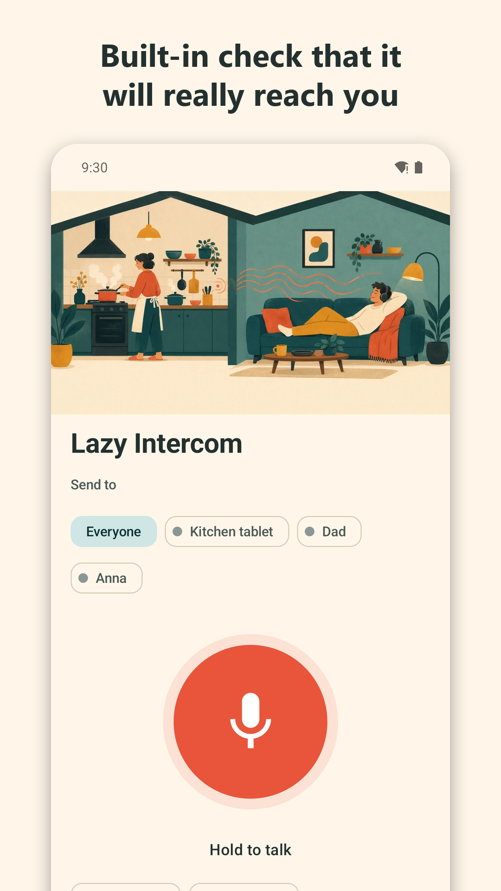
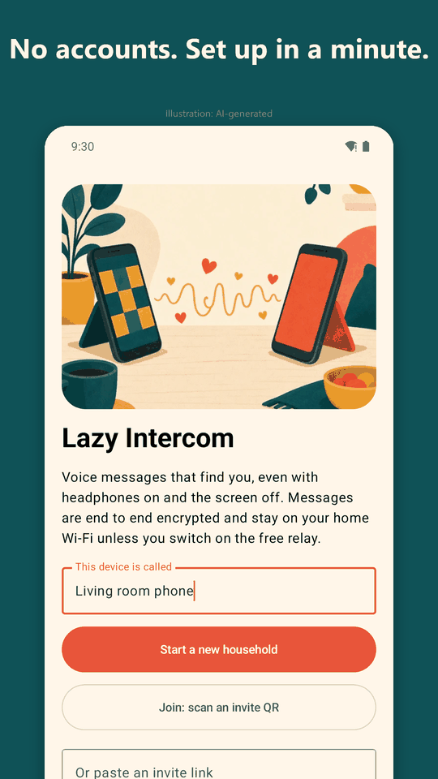
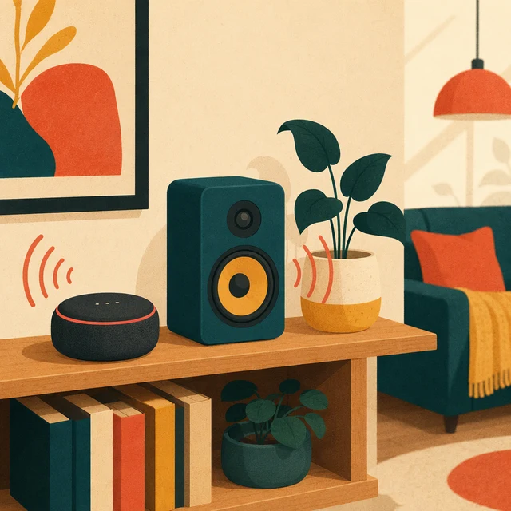

Lazy Intercom: the family intercom app for Android
Dinner is ready, and nobody has to shout up the stairs. Hold a button, speak, and your message plays on the other family phones, even with the screen off and headphones in.
Get it onGoogle PlayFree download. Android only. One small ad banner, or remove it once for EUR 1.99.
For the moments you would otherwise shout
A text that says "dinner is ready" does not help when the reader is wearing noise-cancelling headphones. Lazy Intercom plays your actual voice, first with a friendly sound, so it cannot be missed.
Teens and kids with headphones
The message plays through the headphones they are already wearing, and the screen lights up with who it is from.
Multi-floor homes
Reach the loft, the basement or the garden room without wiring an intercom or climbing stairs.
Home offices
"Lunch in five" without walking into the room, or into the video call.
Grandparents upstairs
A real voice they recognise, replayable if they missed it, with a Heard tick so you know it landed.
How it works
- Install it on each family phone. No accounts, no sign-up. The first phone creates your household.
- Join with a QR code. The other phones scan the invite QR code from Settings and find each other over your home Wi-Fi automatically.
- Hold, speak, release. The recording is sealed with your household key and sent straight to the other phones.
- They hear it. The phone wakes, a sound plays, a short pause follows, then your voice. Nobody tapped Got it within 45 seconds? It replays once, louder.
What it does
- Plays with the screen off and earbuds in. A full-screen "Message from ..." card with Got it, Play again and Reply.
- Louder second chance. One louder replay if nobody acknowledges within 45 seconds, plus an urgent mode.
- Every message kept. Replay any message later; Delivered and Heard ticks show what arrived.
- Smartwatch buzz. Each message also posts a normal notification, so Wear OS, Galaxy and Garmin watches that mirror notifications can buzz.
- 10 built-in sound effects. Played first, then a pause you set (3 seconds by default), then the voice.
- Output you control. Pin playback to a Bluetooth, wired or phone speaker, and set a minimum volume.
- Private by design. AES-256 end-to-end encryption, no accounts, no servers of ours.
- Optional away-from-home relay. Bring your own free Azure Web PubSub resource. The relay cannot read your messages.
See it
Swipe through the app.









Also plays on speakers around the house
Your phone can play the message on speakers and TVs too: sound effect first, then the pause, then your voice.
| Speaker type | Works? |
|---|---|
| Google Cast: Chromecast, Nest and Google Home speakers, Android TV, Cast speakers | Yes |
| DLNA / UPnP: many smart TVs, Sonos, network speakers | Yes |
| Home Assistant media players (can reach Alexa/Echo, Apple TV, HomePod and more) | Yes |
| Home Assistant lights as a silent flashing alert | Yes |
| Spotify Connect speakers | No: Spotify gives apps no way to play other audio on them |
| AirPlay | Not supported |
If a device also speaks Cast or DLNA, or sits in Home Assistant, it can still work that way.
No accounts. Phones find each other.
Phones on the same Wi-Fi discover each other automatically, using three methods at once, so it works on more routers. A QR code joins a new phone to your household.
Every message is AES-256-GCM encrypted with a key that only your household's phones hold. We run no servers and collect no data. Voice recordings are stored on the phone and are made only while you hold the button.
What it does not do
- It is Android only. Family on iPhones can hear you on speakers (Cast, DLNA, Home Assistant), but cannot run the app.
- It is not a live walkie-talkie. You record a message and it is delivered; people reply when they can.
- Spotify Connect speakers and AirPlay do not work (see above).
- The away-from-home relay does not store messages for phones that are offline, and needs a free Azure account you create yourself.
- Some phone makers kill background apps aggressively. Settings has a "Make sure messages arrive" guide for that.
Free, with one small banner
The download is free. A single small ad banner appears on the main screens. It never appears on the incoming-message card. Remove it any time with a one-time in-app purchase, Remove ads.
EUR 1.99 once, no subscription.
In the EEA you will see Google's consent form for ads first. Lazy Intercom is for adults and is not directed at children.
Get it on Google PlayQuestions, answered
What is Lazy Intercom?
Lazy Intercom is a free Android app that turns your family's phones into a home intercom. Hold a button, speak, and the message plays on the other phones in your household, even when their screens are off and headphones or earbuds are in.
Does it work with the screen off and headphones in?
Yes, that is the point. The message wakes the screen with a full-screen "Message from ..." card (Got it, Play again, Reply) and plays through whatever the phone is using, including Bluetooth earbuds. You can also pin the output to the phone speaker, a Bluetooth speaker or wired headphones.
Do I need an account or an internet connection?
No accounts and no sign-up. On your home Wi-Fi the phones talk directly to each other, with no server of ours in the middle. The free version shows one small ad banner, which needs an internet connection to load.
How do the phones find each other?
Automatically, on the same Wi-Fi. The app uses three methods at once (mDNS, a broadcast beacon and a scan of your home network). To add a phone to your household you scan an invite QR code shown on the first phone.
Is it private and secure?
Messages are AES-256 end-to-end encrypted with a key that only your household's phones hold. We run no servers and collect no data. Voice recordings are made only while you hold the button and are stored on the phone.
Can I use it away from home?
Optionally. You can create your own free Azure Web PubSub resource and enter it in Settings, and messages then travel through that relay when phones are not on the same Wi-Fi. The relay cannot read the messages. Limits: a phone that is offline when you send does not receive the message later, and the free tier has daily message limits. It suits people who are comfortable creating a free cloud resource.
Which speakers can play my messages?
Google Cast (Chromecast, Nest and Google Home speakers, Android TV, Cast speakers), DLNA/UPnP (many smart TVs, Sonos and network speakers) and Home Assistant media players, which can also reach Alexa/Echo and Apple TV/HomePod devices. Home Assistant lights can flash as a silent alert.
Does it work with Spotify speakers or AirPlay?
No to both, to be upfront. Spotify gives apps no way to play other audio on a Spotify Connect speaker, and AirPlay is not supported. If the same device also speaks Cast or DLNA, or is available in Home Assistant, it can still work that way.
Is there an iPhone version?
Not at the moment: Lazy Intercom is Android only. Family members on iPhones can still hear your messages on speakers around the house through Cast, DLNA or Home Assistant.
Will it buzz my smartwatch?
Each message also posts a normal Android notification, so watches that mirror phone notifications (Wear OS, Galaxy, Garmin and others) can buzz too. Results depend on your watch and its settings.
How much does Lazy Intercom cost?
The download is free and shows one small ad banner on the main screens, never on the incoming-message card. A one-time in-app purchase, Remove ads, costs EUR 1.99. There is no subscription.
How well tested is it?
Lazy Intercom is new. It has been tested on an Android emulator and against simulated speakers. Testing on real phones, speakers and watches is ongoing, so some models may need tweaks. If something does not work for you, email kalmariumservices@gmail.com and we will look into it.